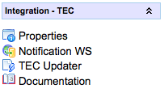
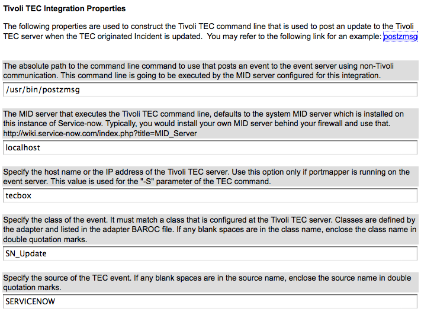

Tivoli Enterprise Console (TEC) Integration 2.0
| |
Note: The following integration is not part of the supported platform. The integration may require additional customization, typically performed by an experienced administrator or consultant, prior to operating correctly. |
| |
Note: This article applies to Fuji and earlier releases. For more current information, see List of Jakarta Plugins at http://docs.servicenow.com
The ServiceNow Wiki is no longer being updated. Visit http://docs.servicenow.com for the latest product documentation. |
Contents
1 Overview
The Tivoli TEC integration is bidirectional and is achieved using Web Services on the inbound and the Tivoli postzmsg command outbound to Tivoli. This article assumes that you are aware of the TEC side of things (setting up trouble ticket rules). The following IBM documentation explains integration with trouble ticketing systems, a foundation of how the following integration works "Integrating your trouble ticket system with the trouble ticket rules".

{kind=link}
- Properties - configure properties for ServiceNow to TEC integration via MID server
- Notification WS - Notification Web Services
- TEC Updater - script object used to queue ServiceNow to TEC update commands using the MID server
- TEC to ServiceNow
- ServiceNow to TEC
A brief overview follows:
1.1 TEC to ServiceNow
- Setup TEC rules to execute TroubleTicket.sh
- TroubleTicket.sh makes a SOAP call to ServiceNow and inserts a "Notification" input record (imp_notification)
- The import transform map creates a new incident, or correlates on an existing incident to update it. It also creates a Listener for the incident for when the incident is modified, Tivoli TEC is notified.
1.2 ServiceNow to TEC
- Execute the Tivoli postzmsg, postemsg or wpostemsg command line commands when a ServiceNow record is updated or closed (more info here http://publib.boulder.ibm.com/tividd/td/tec/SC32-1232-00/en_US/HTML/ecormst33.htm)
- use the correlation_id field to correlate a ServiceNow Incident to a TEC event ID
- Execute command by proxy using the MID Server.
2 Activating the Plugin
To use this feature, activate the Integration - Tivoli Enterprise Console (TEC) 2.0 plugin (Dublin release).
| Click the plus to expand instructions for activating a plugin. |
|---|
|
If you have the admin role, use the following steps to activate the plugin.
|
Prior to the Dublin release, request the plugin.
| Click the plus to expand instructions for requesting a plugin. |
|---|
|
3 Integration Prerequisites
To execute the TroubleTicket.sh script, which is a Perl script, you will need Perl 5.8 or later, and the following Perl modules installed:
- SOAP::Lite (prerequisites http://soaplite.com/prereqs.html)
- XML::Writer
- XML::Writer::String
- Crypt::SSLeay
- IO::Socket::SSL
Since the script will be doing an HTTPS POST, you will also need port 443 or 80 (HTTP) access from your TEC server to your ServiceNow instance
3.1 Installing the Perl modules
To install Perl modules, you can specify the following command line (you would want to run this for each module)
perl -MCPAN -e 'install SOAP::Lite'
The command above will install the SOAP::Lite package from CPAN. This is an interactive installation process, when prompted for input, just accept the suggested or default response.
4 TEC to ServiceNow
4.1 Creating an inbound Notification record using Perl
TEC executes TroubleTicket.sh and TroubleTicket.sh posts an inbound Notification record to ServiceNow by posting a SOAP message that contains information about the TEC Event. The Notification record is a standard Web service import set table that is used for all inbound notification type messages and is processed by a standard transform map into an Incident record.
| |
Note: It is important that the incoming SOAP message send in the value of TEC for the type field, this value is used in the transform map to create a TECUpdater listener process. The TECUpdater listener process observes modifications to the associated Incident and transmits updates back to TEC |
The following is a listing of TroubleTicket.sh that you will use:
#!/usr/bin/perl
#
use strict;
use SOAP::Lite;
use XML::Writer;
use XML::Writer::String;
# define the URL to your ServiceNow instance here
my $SNC_HOST = "https://yourinstance.service-now.com/";
# this is the Tivoli TEC server hostname
my $TEC_HOST = "tivhost-1";
# the group that the resulting Incident assignment group will be mapped to
my $TEC_GROUP = "ITSM Engineering";
# the category that the Incident category will be mapped to
my $TEC_CATEGORY = "software";
# TEC severity code will be mapped to Incident priority
my $TEC_SEVERITY = "2";
# this will be mapped into the Incident's comments journal field
my $TEC_DESC = "Sample incident record created from TEC TroubleTicket.sh";
# this will be mapped into the Incident's short_description field
my $TEC_OBJECT = "$ENV{EVENT_CLASS}-$ENV{hostname}";
# the correlation ID is used to locate existing Incidents and update, if not found,
# a new Incident is created
my $TEC_CORRELATION = "$ENV{'event_handle'}:$ENV{'server_handle'}:$ENV{'date_reception'}";
tec_create();
sub tec_create {
# this is the URL for the SOAP endpoint to enqueue a TEC notification
# onto ServiceNow's imp_notification, to be processed by a map that produces
# an Incident
my $soap = SOAP::Lite->proxy("$SNC_HOST/imp_notification.do?SOAP");
my $method = SOAP::Data->name('insert')->attr({xmlns => 'http://www.service-now.com/'});
# imp_notification record mapping, triggers the map
# the type field value of "TEC" is important
# for the map to identify the incoming message as coming from TEC
my @params = ( SOAP::Data->name(type => 'TEC') );
push(@params, SOAP::Data->name(source => "$TEC_HOST") );
push(@params, SOAP::Data->name(uuid => "$TEC_CORRELATION") );
push(@params, SOAP::Data->name(severity => "$TEC_SEVERITY") );
push(@params, SOAP::Data->name(message => "$TEC_OBJECT") );
push(@params, SOAP::Data->name(comments => "$TEC_DESC") );
push(@params, SOAP::Data->name(category => "$TEC_CATEGORY") );
push(@params, SOAP::Data->name(assignment_group => "$TEC_GROUP") );
# call the service and set the result object
my $result = $soap->call($method => @params);
# print out any SOAP Faults
if ($result->fault) {
print "faultcode=" . $result->fault->{'faultcode'} . "\n";
print "faultstring=" . $result->fault->{'faultstring'} . "\n";
print "detail=" . $result->fault->{'detail'} . "\n";
}
# print out all fields in the response document as a result
# of the incident creation
if ($result->body && $result->body->{'insertResponse'}) {
my %keyHash = %{ $result->body->{'insertResponse'} };
foreach my $k (keys %keyHash) {
print "name=$k value=$keyHash{$k}\n";
}
}
}
# convenient sub for creating xml elements
sub write_element {
my ($label,$value) = @_;
$writer->startTag($label);
if($value) {
$writer->characters($value);
}
$writer->endTag($label);
}
# this sub instructs the SOAP client to supply login credentials for
# the ITIL user is required
sub SOAP::Transport::HTTP::Client::get_basic_credentials {
return 'itil' => 'itil';
}
If your company uses a proxy firewall for restricting HTTP(S) access, you can specify your proxy settings on the same line as well (http://cookbook.soaplite.com/#specifying%20proxy). For example:
my $soap = SOAP::Lite->proxy('$SNC_HOST/imp_notification.do?SOAP',
proxy => ['http' => 'http://my.proxy.server/']);
# -- OR --
my $soap = SOAP::Lite->proxy('$SNC_HOST/imp_notification.do?SOAP',
proxy => 'http://my.proxy.server/');
# -- OR --
my $soap = SOAP::Lite->proxy('$SNC_HOST/imp_notification.do?SOAP');
$soap->transport->proxy('http' => 'http://my.proxy.server/');
For configuring authenticating proxy servers, please see the following link http://cookbook.soaplite.com/#accessing%20service%20with%20proxy%20authentication
4.2 Parsing the SOAP response
As a response to the SOAP invocation above, you will get the SOAP response below:
<SOAP-ENV:Envelope
xmlns:xsi="http://www.w3.org/2001/XMLSchema-instance"
xmlns:xsd="http://www.w3.org/2001/XMLSchema"
xmlns:SOAP-ENV="http://schemas.xmlsoap.org/soap/envelope/"
xmlns:SOAP-ENC="http://schemas.xmlsoap.org/soap/encoding/"
SOAP-ENV:encodingStyle="http://schemas.xmlsoap.org/soap/encoding/">
<SOAP-ENV:Body>
<insertResponse>
<sys_id>8060c70b0a0a0b50000d0816b5196a87</sys_id>
<table>incident</table>
<display_name>number</display_name>
<display_value>INC10116</display_value>
<status>inserted</status>
</insertResponse>
</SOAP-ENV:Body>
</SOAP-ENV:Envelope>
- sys_id - the unique ID of the Incident record that was inserted/updated
- table - the mapped target table that was modified
- display_name - the display name field of the table, eg. number for task
- display_value - the value of the display name field, for Incident, it is the Incident number
- status - inserted/updated/error indicates that action as a result of the map
In the case when an unexpected server exception has occured you will get a SOAP Fault message as follows:
<SOAP-ENV:Envelope
xmlns:SOAP-ENV="http://schemas.xmlsoap.org/soap/envelope/">
<SOAP-ENV:Header></SOAP-ENV:Header>
<SOAP-ENV:Body>
<SOAP-ENV:Fault>
<faultcode>SOAP-ENV:Server</faultcode>
<faultstring>java.lang.Exception: This is a fault message</faultstring>
<detail>Error completing SOAP request</detail>
</SOAP-ENV:Fault>
</SOAP-ENV:Body>
</SOAP-ENV:Envelope>
In the case when an error is detected during the processing of the notification data by the map, you will get an error in the response document as follows:
<SOAP-ENV:Envelope
xmlns:xsi="http://www.w3.org/2001/XMLSchema-instance"
xmlns:xsd="http://www.w3.org/2001/XMLSchema"
xmlns:SOAP-ENV="http://schemas.xmlsoap.org/soap/envelope/"
xmlns:SOAP-ENC="http://schemas.xmlsoap.org/soap/encoding/"
SOAP-ENV:encodingStyle="http://schemas.xmlsoap.org/soap/encoding/">
<SOAP-ENV:Body>
<insertResponse xmlns="http://www.service-now.com">
<sys_id>error</sys_id>
<status>error</status>
<error_message>No web service automap found or no fields were mapped</error_message>
</insertResponse>
</SOAP-ENV:Body>
</SOAP-ENV:Envelope>
- sys_id - indicates that an error has occured and was handled
- status - indicates that an error has occured and was handled
- error_message - a short description of the type of error that has occured
4.3 Notification Web Service Import Set
Once you've posted the SOAP message an inbound Notification import set row is created. The Notification web service import set is located under the Integration - TEC application. The integration uses the standard Notification web service import set. On this Edit Web Service form, you can add additional fields to the web service if you wish, or select the related import set map to alter the default mapping conditions.

4.3.1 Web Service Fields
A list of modifiable (admin rights) web service fields. You can add more fields here or extend the size of these fields if you need to.
4.3.2 Web Service Transform Maps
Transform Maps that map the source Notification into the target Incident table. The map also sets up a listener process for each Incident created by TEC. When the Incident is updated, the TEC Updater script object is triggered to command the configured MID Server to execute a TEC command to update TEC.
The TEC event's event ID is used to correlate the Incident and is used to update the TEC event in the opposite direction when the Incident is updated.
5 ServiceNow to TEC
Integration from ServiceNow to Tivoli TEC utilizes the Tivoli postzmsg, postemsg or wpostemsg command line commands. When an Incident is created from TEC, the incident will trigger the TEC Updater script object whenever it is updated. As a result, the data mapping from an incident to the TEC event can be modified in this script.
5.1 Properties
The following properties configure the TEC event, as well as the MID Server that would execute the command line.

{kind=link}
5.2 TEC Updater Script Object
The following script object is executed whenever a Tivoli TEC created incident is updated, so that the update is sent back to Tivoli as a TEC event.
gs.include("PrototypeServer");
var TECUpdater = Class.create();
TECUpdater.prototype = {
initialize : function() {
this.command = gs.getProperty("com.snc.integration.tec_command", "postzmsg");
this.midServer = gs.getProperty("com.snc.integration.tec_mid_server", "localhost");
this.tecServer = gs.getProperty("com.snc.integration.tec_server", "localhost");
this.eventClass = gs.getProperty("com.snc.integration.tec_event_class", "SN_Update");
this.source = gs.getProperty("com.snc.integration.tec_source", "SERVICENOW");
this.commandStr = this.command +
" -S " + this.tecServer;
this.arguments = "";
},
process : function() {
if (operation == "insert")
this.processInsert();
if (operation == "update")
this.processUpdate();
if (operation == "delete")
this.processDelete();
},
processUpdate : function() {
this.commandStr += " -m \"ServiceNow Incident Update\""
// map ServiceNow fields to Tivoli attributes
this.addArgument("sn_tkt_num",current.number);
this.addArgument("sn_asgn_grp",current.assignment_group.getDisplayValue());
this.addArgument("originating_event_id",current.correlation_id);
this.addArgument("sn_assignee",current.assigned_to.getDisplayValue());
this.addArgument("sn_priority",current.priority);
this.addArgument("sn_resolution",current.close_notes);
this.addArgument("sn_state",current.incident_state);
var egr = new GlideRecord("ecc_queue");
egr.initialize();
egr.agent = "mid.server." + this.midServer;
egr.queue = "output";
egr.topic = "Command";
// build the TEC command
egr.payload = "<parameters><parameter name='name' value='" +
this.commandStr +
this.arguments +
" " + this.eventClass +
" " + this.source +
"'/></parameters>";
egr.insert();
},
processDelete : function() {
// process a deleted incident
},
processInsert : function() {
// process inserting an incident
},
addArgument : function(name, value) {
this.arguments += " " + name + "=\"" + value + "\"";
}
}
6 Enhancements
6.1 Dublin
- Administrators can activate the Tivoli Enterprise Console (TEC) Integration 2.0 plugin without contacting ServiceNow technical support.
Contents > Integrate > Vendor Specific Integrations > Event Integrations
Contents > Integrate > Vendor Specific Integrations > Incident Integrations